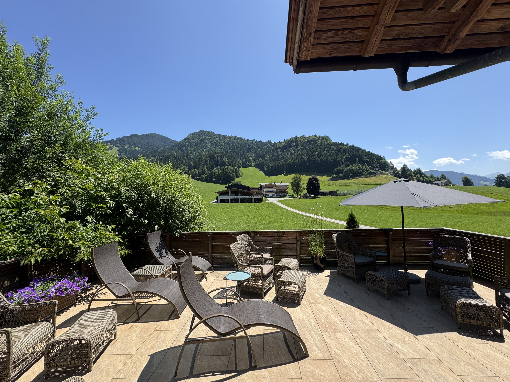

Faciliteter på Edelweiss
Hotellet tilbyder en række faciliteter, der gør dit ophold både praktisk og behageligt. Du har fri adgang til wellness- og fitnessfaciliteter, som er velegnede til restitution efter aktive dage.
Når solen skinner, indbyder terrassen på 1. sal til afslapning med panoramaudsigt over bjergene. Derudover tilbyder vi praktisk opbevaring af ski og udstyr, så hverdagen på bjerget bliver enkel og overskuelig.
Wellness faciliteter
Vores wellnessområde er skabt til ro, varme og restitution, hvad enten du har haft en aktiv dag i bjergene eller bare har brug for at sætte tempoet ned.
Her finder du både klassisk sauna, infrarød sauna og koldtvandskar, som kan bruges enkeltvis eller i kombination. Varmen løsner op, kulden giver et friskt boost, og du vælger selv rytmen.
Som en del af wellnessoplevelsen tilbyder vi også Cryo Vital Body Rulle-behandling – en behandling, der kombinerer massage med nær-infrarødt lys og understøtter kroppens naturlige restitution.
Vi tilbyder desuden sauna gus ca. én gang om ugen. Spørg i receptionen eller baren for tidspunkt.
Fitness faciliteter
På hotellet har vi indrettet et lille, men veludstyret fitnessrum med kvalitetsudstyr fra Eleiko. Det er et sted for dig, der gerne vil holde kroppen i gang under opholdet, uden at det kræver mere end det, du selv har lyst til.
Fitnessrummet er åbent hele dagen og frit tilgængeligt for alle hotellets gæster. Efter træning kan du gå direkte i bad eller fortsætte i wellnessområdet.
Ønsker du en roligere form for bevægelse, er der mulighed for yoga enten på terrassen eller i naturen omkring hotellet, alt efter vejr og stemning.
Du sætter tempoet. Vi har rammerne.
At brug af wellnessområde og fitnessudstyr sker på eget ansvar. Er du gravid, har skader, lider af en alvorlig sygdom eller har pacemaker, bør du tale med egen læge inden du bruger faciliteterne.
Husk badetøj. Håndklæder er allerede at finde i wellnessområdet.
Ski opbevaring
Hotellet har et skirum, hvor du nemt og sikkert kan opbevare dit skiudstyr under dit ophold. Rummet er indrettet med opvarmet støvletørrer, så dine støvler er tørre og klar til næste dag på bjerget.
Husk, at den gratis skibus kører direkte fra hotellet til pisterne og gør din skiferie enkel og bekvem.